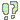

Hobbies
Likes & Dislikes
i love cats, aesthetics, lists, the web, fandom spaces, comedy music, dinosaurs, romance, running gags and inside jokes, structured conversation, words & etymology, accents, ballpoint pens, pixel art, mornings, dusk, geography, trivia, tropes, polyamory, horror movies, 18th century sailing ships, collecting, playlists, fictional cannibalism, fireworks, lucid dreams, gore, true crime, mustaches, ascii, non-fiction books, halloween, wind, guessing games, trivia, nostalgia :)
 i love cats, aesthetics, lists, the web, fandom spaces, comedy
music, dinosaurs, romance, running gags and inside jokes, structured conversation, words & etymology, accents, ballpoint pens, pixel art, mornings, dusk, geography, trivia, tropes,
polyamory, horror movies, 18th century sailing ships, collecting, playlists, fictional cannibalism, fireworks, lucid dreams, gore, true crime, mustaches, ascii, non-fiction books,
halloween, wind, guessing games, trivia, nostalgia :)
i love cats, aesthetics, lists, the web, fandom spaces, comedy
music, dinosaurs, romance, running gags and inside jokes, structured conversation, words & etymology, accents, ballpoint pens, pixel art, mornings, dusk, geography, trivia, tropes,
polyamory, horror movies, 18th century sailing ships, collecting, playlists, fictional cannibalism, fireworks, lucid dreams, gore, true crime, mustaches, ascii, non-fiction books,
halloween, wind, guessing games, trivia, nostalgia :)
 i hate ladybugs, smokers, dni lists, cancel culture, cynicism, dystopias, weed humor, tiktok, news, work culture, sneezes, toxic positivity, reddit, coffee, tea, winter, astrology taken seriously, ya literature, landlords, gum, spicy foods, team sports, snobbish academic culture, procrastinators, filmbros, carrots, messiness, maximalism, cables, snow, modern design trends, large submerged man-made objects, bitter people, twitter, spiders, censorship, hypocrites, virtue signalling, paparazzi pictures >:(